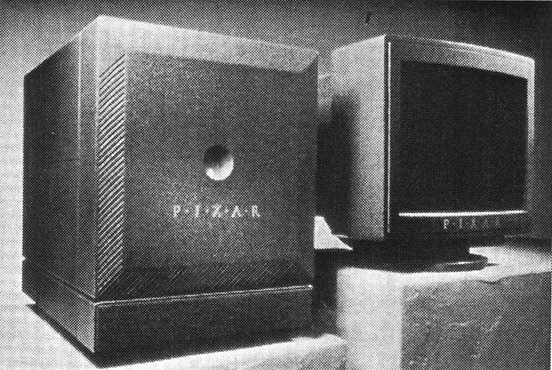

Pixar has a very fascinating history. It is quite complicated as well. Alexander Schure, founder of the New York Institute of Technology (NYIT), dreamed of making the world's first computer-animated film. In 1974, with several computer scientists, including Edwin (Ed) Catmull, he set out to do just that.
Together, these computer scientists formed the Computer Graphics Lab (CGL) at NYIT. One issue was that they lacked the expetise to animate, so they were recruited by George Lucas, the mastermind behing the Star Wars franchise, to work at Lucasfilm as part of the Graphics Group there. George wanted from the newly established Group to create a digital film editing system, a didgital sound editing system and a laser filem printer. For the next few years during their stay at Lucasfilm, the group pioneered many of the techniques used in Computer-generated (CG) animation.
One such technique was the Industrial Light and Magic, which was used in Star Trek: The Wrath of Khan (the Genesis Effect) and in Young Sherlock Holmes (the Stained Glass Knight). However, in 1983, after the release of The Last Jedi, the dropoff in revenue caused George Lucas to sell off his Graphics Group.
At the time, computers weren't powerful enough to render a fully computer-animated movie. In the meantime, the remaining employees of the Graphics Group formed the independent company we know now as Pixar. At first, they sold hardware such as the Pixar Image Computer. It was incredibly powerful for its time, being able to create 3D images from high resolution imagery. This system was originally sold to the government and to the medical industry. They produced the Renderman, a photorealistic 3D rendering software.
History of Pixar 